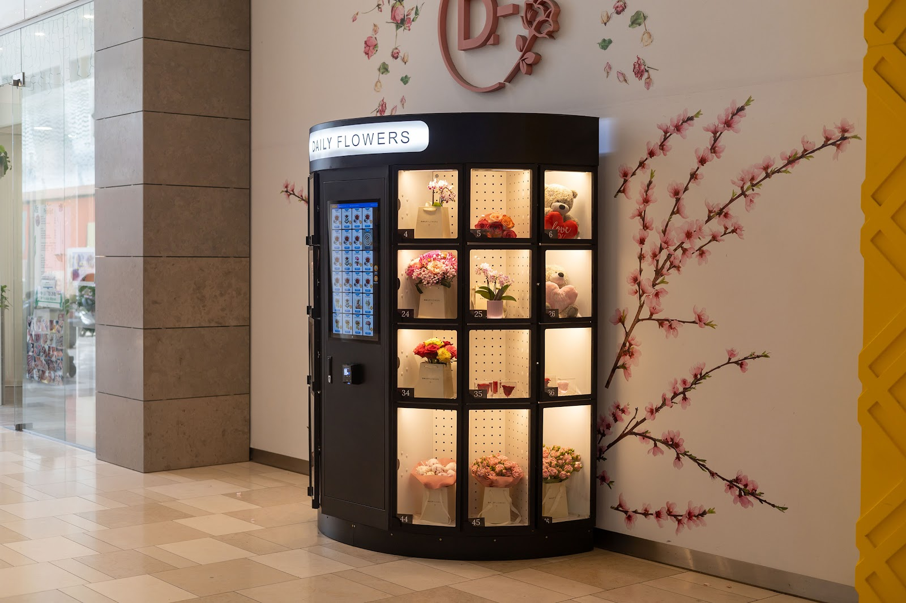
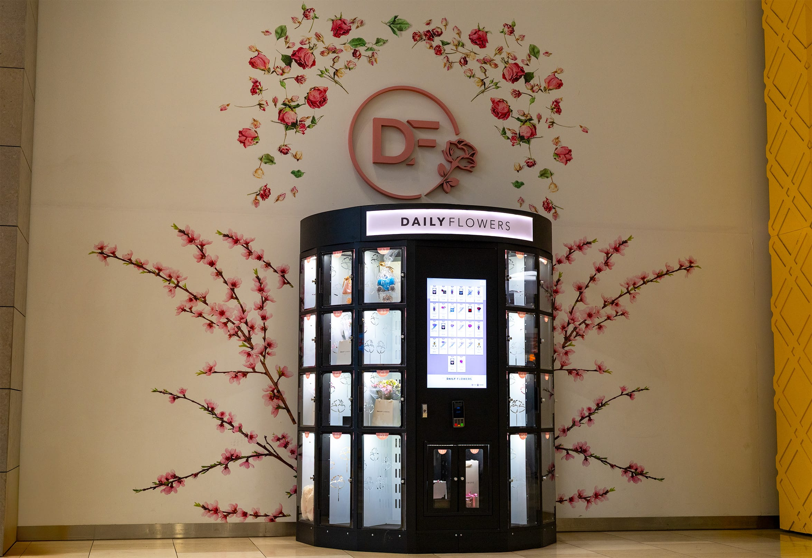
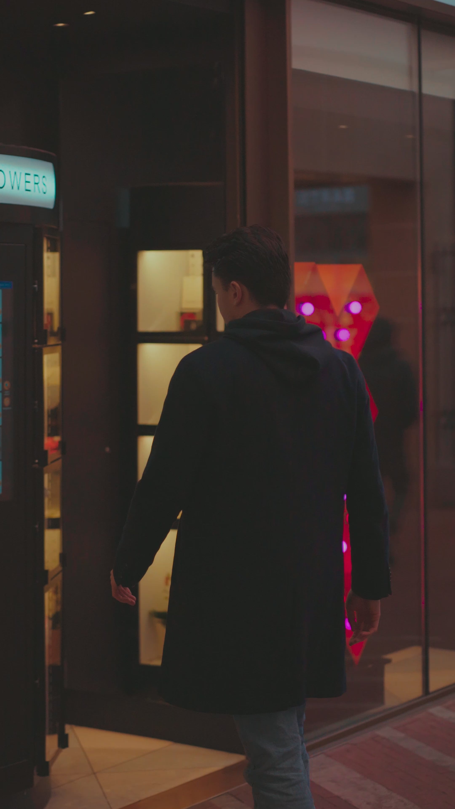
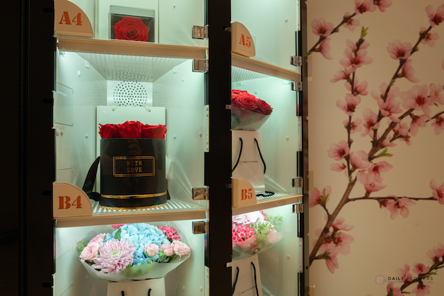
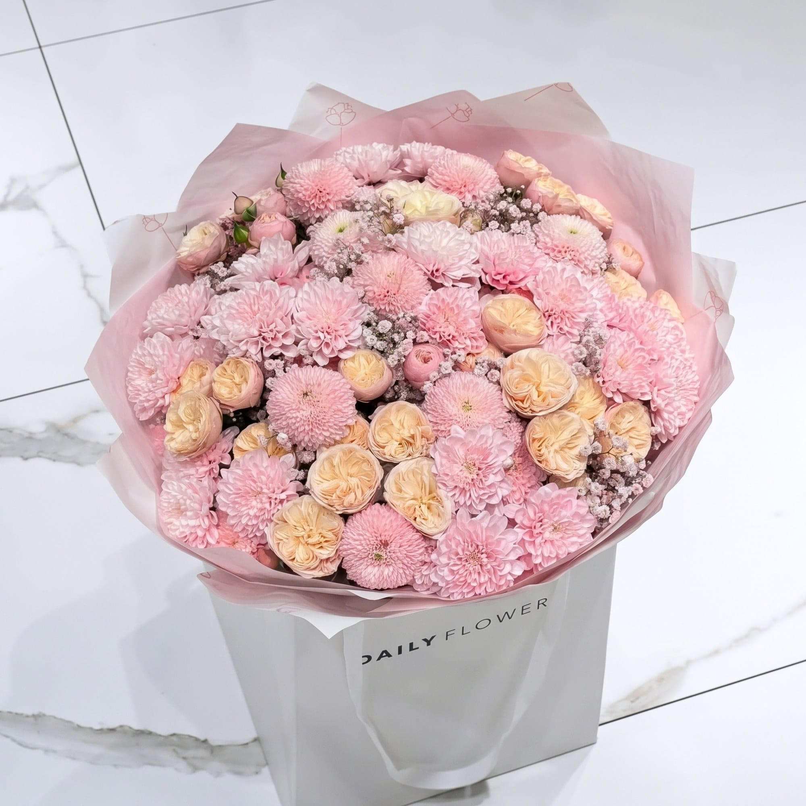
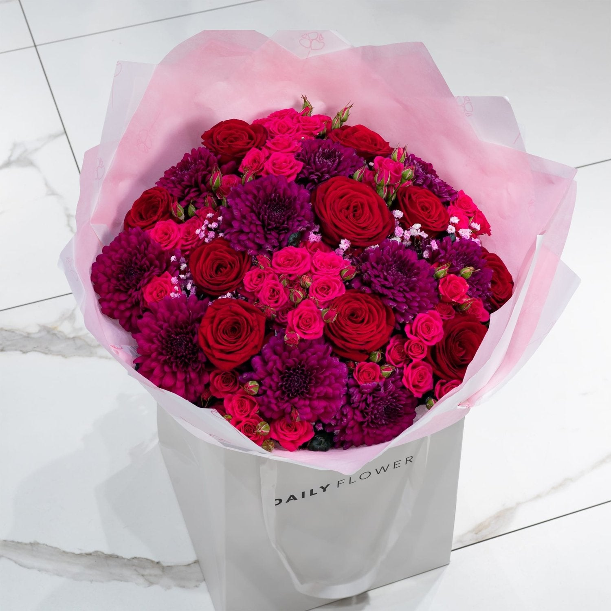
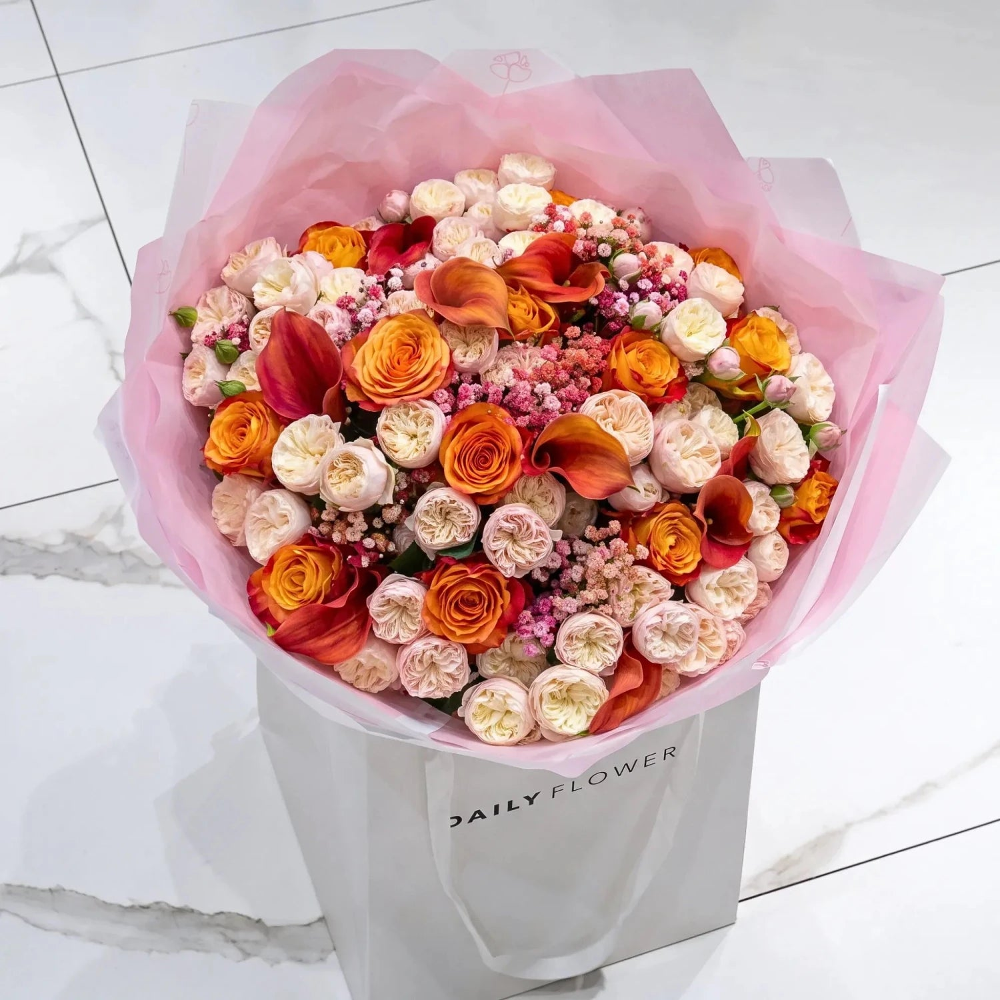
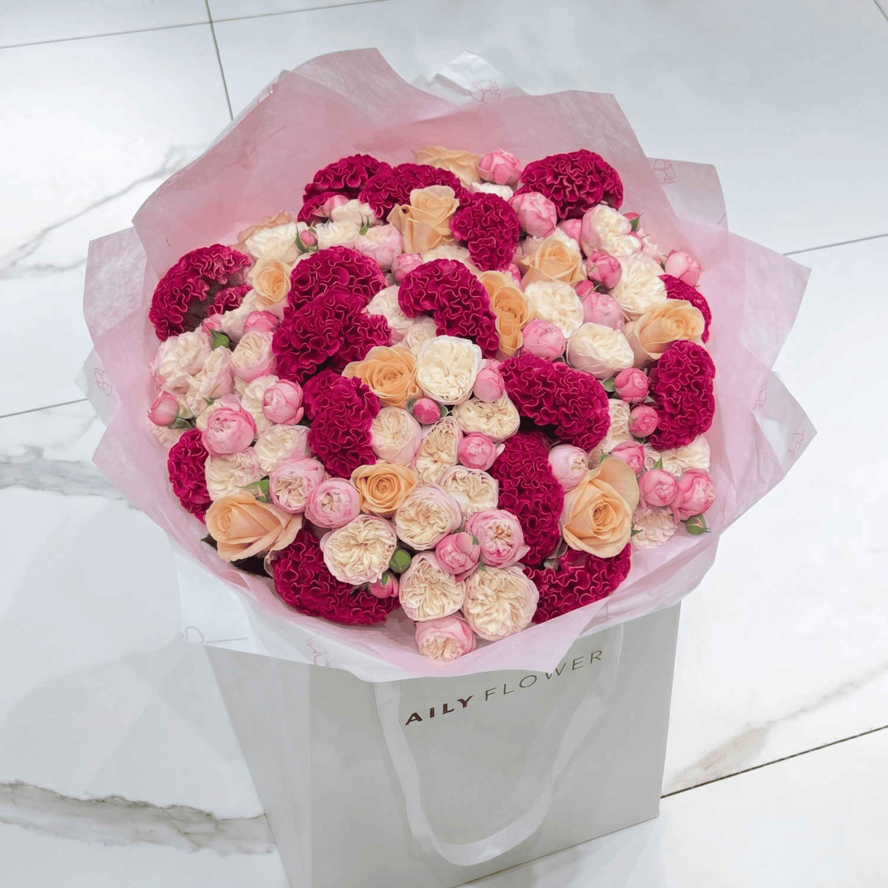
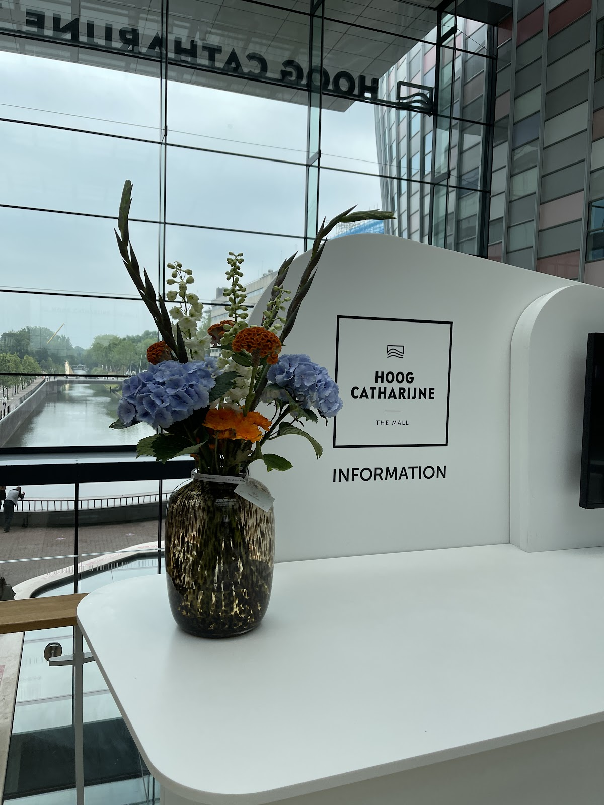

Bloemenautomaat in Hoog Catharijne, Utrecht
Bloemen, van vroeg tot laat.
Elke dag van 06:00 tot 23:00 pakt u bij ons een vers boeket, een doos rozen of een klein cadeau. Midden in het winkelcentrum, vlak bij het station.
4,7 uit 41 Google-reviews


Twee keer rechts, en u staat ervoor.
Loop vanaf Utrecht Centraal Hoog Catharijne in en sla twee keer rechtsaf. De automaat staat tussen Xenos en Cinnabon, onder het grote roze DF-logo. U kunt hem niet missen.
- Adres
- Godebaldkwartier 54
3511 EM Utrecht - Precies hier
- Tussen Xenos en Cinnabon, in winkelcentrum Hoog Catharijne
Om zes uur open.
Om elf uur nog steeds.
Vroeg naar kantoor, laat terug van de trein of op weg naar een etentje: de vakjes zijn zeven dagen per week gevuld en open.
| Maandag | 06:00 tot 23:00 |
| Dinsdag | 06:00 tot 23:00 |
| Woensdag | 06:00 tot 23:00 |
| Donderdag | 06:00 tot 23:00 |
| Vrijdag | 06:00 tot 23:00 |
| Zaterdag | 06:00 tot 23:00 |
| Zondag | 06:00 tot 23:00 |

Van een grote bos tot een kleine vaas.
Achter elk verlicht vakje wacht iets moois: een rijk gevuld boeket in de witte Daily Flowers-tas, rode rozen in een doos, of een cadeautje om erbij te geven.
- Exclusive Collection
- Rozen
- Flowers in a Box
- Preserved roses
- Boeketten





Liever laten bezorgen? Bekijk alle boeketten in de webshop
Wat Utrecht ervan vindt
4,7 uit 41 Google-reviews
"Voor ons huwelijk op 9 april 2022 hebben Ivar en zijn team een supermooi pronkstuk als bruidsboeket gemaakt dat helemaal bij mij paste en waar ik vele complimenten over heb gehad. Ik kan Daily Flowers ten zeerste aanraden omdat zij niet alleen mooie boeketten maken, maar de service ook echt top is! Ze denken heel goed (...)"
"Super verse bloemen en sierlijke boeketten! Ziet er verzorgd uit en de automaat werkt uitstekend. Echt een aanrader voor een leuk cadeau of gewoon om je huis op te vrolijken💐🤩. Als je Hoog Catharijne inloopt vanaf het station is het twee keer rechts. Kan niet missen."
"De beste bloemist van Utrecht en Amsterdam. De eigenaren komen zelf langs om het boeket af te geven om zo de kwaliteit te garanderen. Zij hebben ook een unieke vending machine op het winkelcentrum van Hoog Catharijne staan. Dus je kan daar altijd een bloemetje vandaan halen."
"Super om op deze manier een prachtig boeket te kunnen kopen. Ik wil graag kwaliteit en dat is nu veel makkelijker op een snelle manier te krijgen. De service van een abonnement op hele bijzondere boeketten met bijpassende vaas bevalt ook heel erg goed!"
"Top service, prijs kwaliteit verhouding is top! En daarnaast hebben ze een uitstekende service en nog extra moeite voor een verzoek gedaan wat de verassing afmaakte. Echt uitstekend!"

Iets bijzonders in gedachten?
Een bruidsboeket dat helemaal bij u past, of elke keer een bijzonder boeket met een bijpassende vaas via een abonnement. Vertel ons wat u wilt, dan denken we graag met u mee.